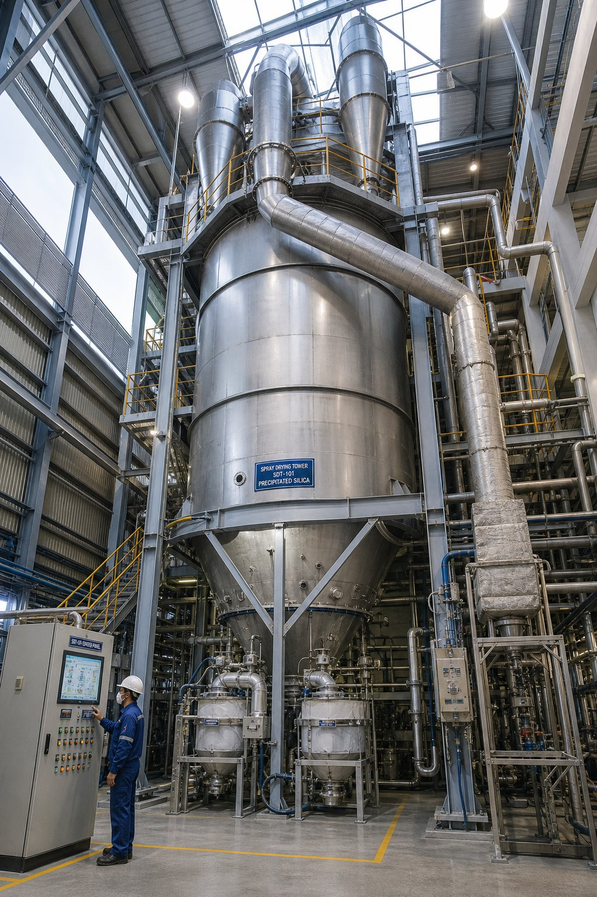
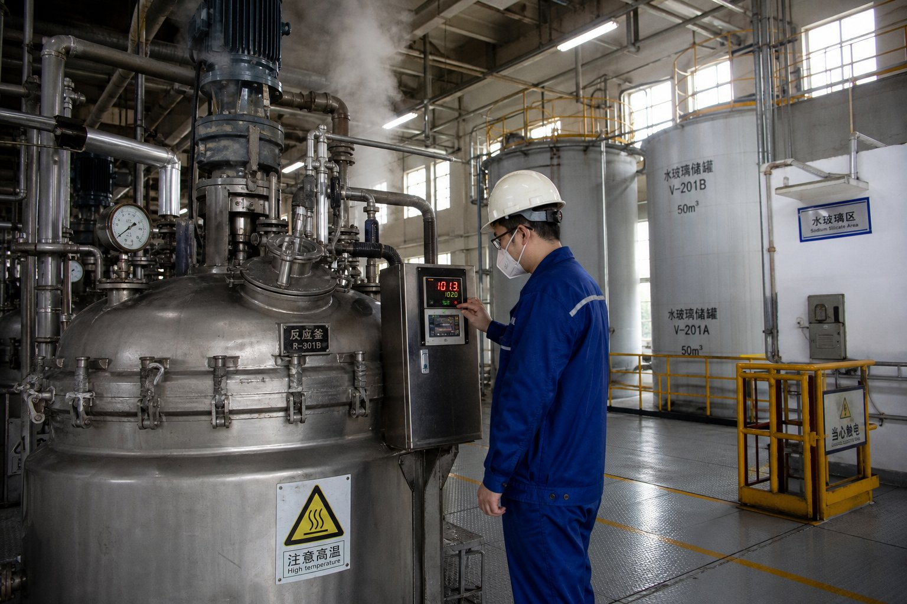
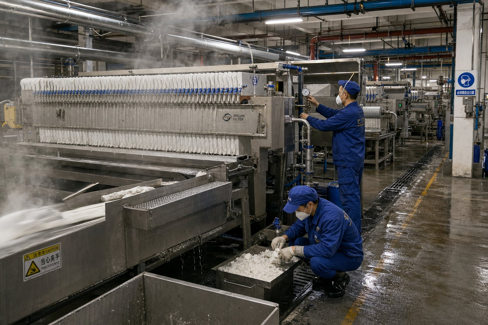
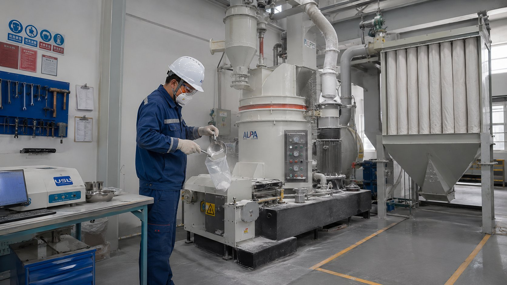
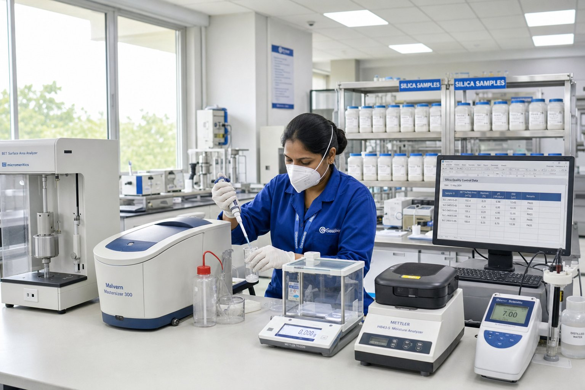
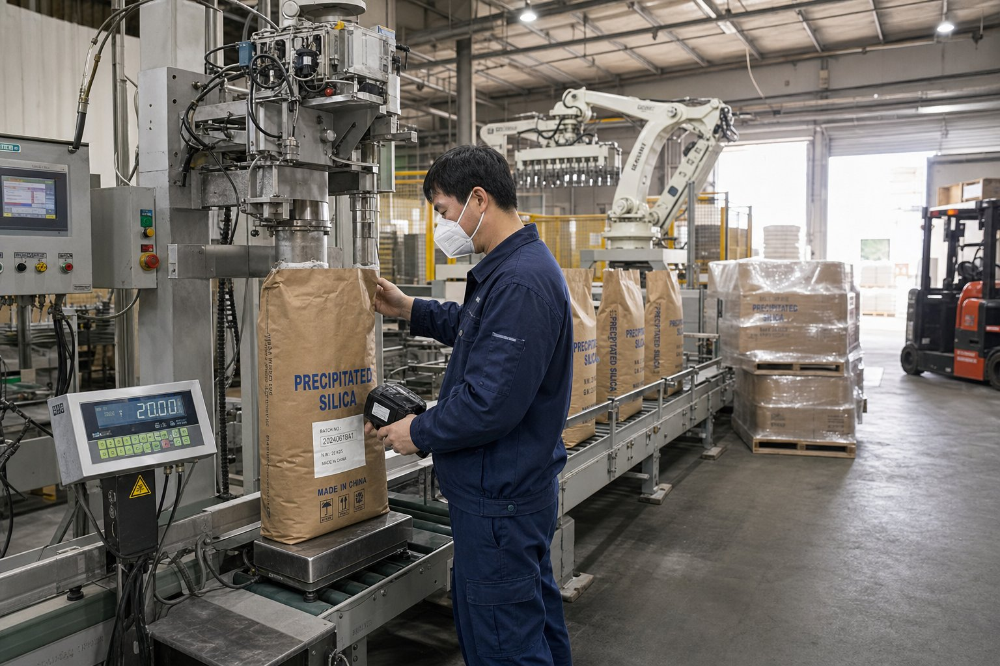

Every batch of Vistasilica precipitated silica follows the same controlled route — reaction, filtration, spray drying, milling, quality control and packaging — so the structure, particle size and purity you validate in a sample hold across repeat orders.
Precipitated silica is built, not mined. Sodium silicate and acid are reacted under controlled conditions to grow a porous silica network, then washed, dried, milled and tested — each stage tuned to the target application.

Sodium silicate solution reacts with sulfuric acid in temperature-controlled reactors. Dosing rate, concentration and temperature are tuned to grow the pore structure and surface area that define each grade family — high-structure carriers, thixotropic thickeners or low-abrasion cleaning silicas all start here.

The silica slurry is dewatered on plate-and-frame filter presses and washed repeatedly to remove residual sodium sulfate. Conductivity and filtrate clarity are checked against spec so downstream drying and the final purity are not compromised by residual salts.
Wet silica cake is redispersed and fed to a spray drying tower. Inlet and outlet temperatures control the final moisture, bulk density and particle structure — the difference between a free-flowing carrier and a compact thickening grade is set at this stage.

Dried silica is milled and air-classified to the target median particle size (D50), then screened to control the 45µm oversize. This is where a cosmetic-grade fine silica and a coarse feed carrier diverge — same chemistry, different particle distribution.

Every batch is tested before release — BET surface area, DOP oil absorption, particle size by laser diffraction, pH, moisture, loss on ignition and SiO₂ purity. A Certificate of Analysis is issued and travels with the goods, so your lab and import process have verifiable numbers, not promises.

Finished silica is packed in 20/25 kg multi-wall kraft bags with PE inner liner, or 500 kg / 1,000 kg FIBCs (big bags), palletized and stretch-wrapped. Consolidated shipments let overseas customers trial several grades in one container, then scale repeat orders line by line.
The same reaction, drying and milling parameters that made your sample are locked into the production recipe — so the BET, D50 and oil absorption you validated hold across batches.
One controlled route produces the full grade range — feed carriers, food flow aids, dental silica, agro carriers, oil-refining silica and cosmetic mattifiers — differentiated at precipitation and milling.
Moisture-proof liners, palletized and stretch-wrapped loads, and multi-grade consolidation make trial orders affordable and repeat orders stable — from 25 kg up to full containers.